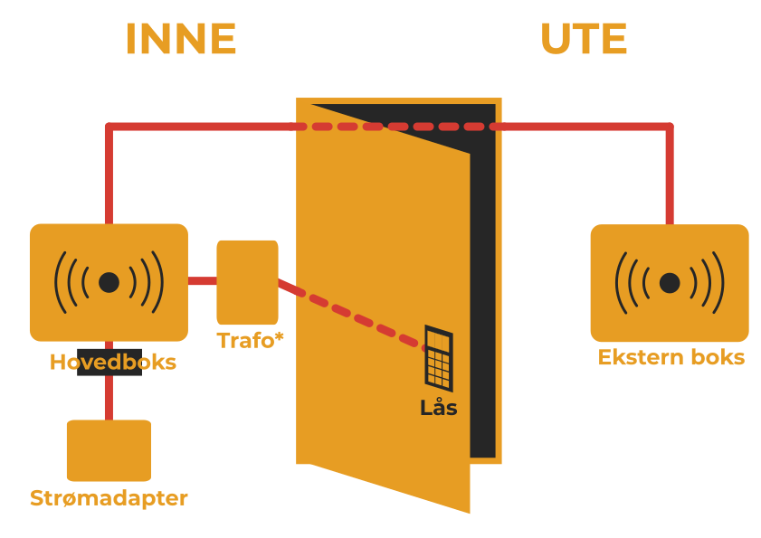

Med Infotechs spesialutviklede Byggekortleser kan du hente ut all informasjon om hvem som er til stede på byggeplassen. Arbeiderene registerer byggekortet sitt på Byggekortleseren når de kommer og går. Elektronisk bemanningsliste er tilgjengelig på web.
Du sparer tid og penger og øker sikkerheten på byggeplassen. Ifølge Byggherreforskriften skal det føres daglige oversiktslister over alle som utfører arbeid på bygge- og anleggsplassen. Å føre oversikten manuelt er tidkrevende og kostbart. Byggekortleseren løser problemet enkelt ved at arbeideren selv registrerer HMS-kortet sitt inn og ut hver gang de kommer og går. Dataene er alltid tilgjengelige og kan brukes som f.eks. evakueringsliste, opp mot lønnssystemet eller fremvises ved kontroll.
Byggekortleseren monteres enkelt på byggeplassen i løpet av få minutter. Alle arbeidstakere på byggeplassen er pålagt av Arbeidstilsynet til å være utstyrt med et HMS-kort. Arbeidstakerne registrerer HMS-kortet på Byggekortleseren. Informasjonen sendes trådløst ved hjelp av GPRS til en database hos oss. Du får tilgang til en nettside hvor du kan se hvem som er eller har vært på byggeplassen.Byggekortleseren er enkel å montere. Den skrues på veggen, og når en har koblet til strøm er den klar til bruk. Det kreves ingen opplæring for å kunne bruke Byggekortleseren.
Fordi Byggekortleseren er koblet opp mot internett, vil du alltid ha tilgang til oppdaterte oversiktliste og historikk. Informasjonen oversendes kontinuerlig fra Byggekortleseren til databasen, og kan avleses hvor som helst, når som helst, via PC smarttelefon eller nettbrett.
Infotech tilbyr også Byggekortleser med adgangskontroll for oppkobling mot rondell, port, dør etc. Via websiden bestemmer man enkelt hvem som skal få tilgang til byggeplassen.
Man kan legge til kortnummer for hver enkelt som skal ha tilgang, eller alle kort i et firma. Ved hjelp av innebygget relé åpnes sluttstykke eller port ved godkjent kort.
Det er nå kun personer med med godkjente kort som får adgang til byggeplassen.
Du kan leie Byggekortleseren til en fast pris pr måned. Byggekortlesertype og prosjektverdi bestemmer hvilken pris du betaler.
For kunder som også benytter seg av ITBASE prosjektweb gis det 10% rabatt.Alle priser er i NOK ekskl. MVA.
Du kan returnere leseren dersom du ikke er fornøyd med den. Returen er gratis når den skjer innen tre uker.
Byggekortleseren blir sendt til deg med bedriftspakke og er klar for montering. Den må monteres under tak, beskyttet mot nedbør og ekstreme temperaturer.
1. Skru Byggekortleseren fast på veggen med 4 skruer
2. Plugg i strømkabelen
Byggekortleser med adgangskontroll
Byggekortleser montert på dør med elektronisk sluttstykke. Døren åpnes kun for kort som er lagt inn i systemet:

* - Ikke inkludert
Hovedboksen monteres på innsiden av dør som krever adgangskontroll. Før denne monteres på veggen må ledningen for relé kobles til. Relétilkoblingen fungerer som en bryter som slås på noen sekunder når gyldig kort registreres. Releene kan håndtere inntil 24V/1A.
Den andre boksen monteres på utsiden av døren og kobles til med 1m kabel som følger med. Når dette er montert kan strøm kobles til hovedboksen på innsiden.
Systemet skal nå være klart til bruk. Via nettsiden kan man gi tilgang til kort som skal ha adgang til byggeplassen.
Byggekortleser kan også monteres på rondell eller kjøreport:
Illustrasjon (Montering)

Ja.
Bruk av informasjon fra Byggekortleseren som kontroll på timeføring vil være sammenlignbart med bruk av stemplingsur. Det vil være greit å benytte systemet til dette, men de ansatte/tillitsvalgte bør informeres om dette før systemet tas i bruk til slike formål.
Leseren kan monteres både innendørs og utendørs. Man plasserer den der det anses som mest hensiktsmessig for formålet.
Nei, vi leier kun ut Byggekortlesere. For å gjøre installasjon og bruk av systemet så enkelt og rimelig som mulig for brukerne blir nettsidene og rapportene generert på servere hos oss. Dersom man skulle kjøpt egne Byggekortlesere, måtte man også hatt egne servere og tilhørende systemer, noe som ville gjort kostnadene mye høyere og ført til mye ekstraarbeid.
Nei, det er ikke nødvendig å forhåndsregistrere kort som benyttes i systemet. Alle HMS-kort som er levert etter 28.10.2011 (og også de fleste kort som er levert før dette) har RFID med standard bransjekoding der navn og annen informasjon om den ansatte ligger registrert elektronisk på kortet. Når man holder et slikt kort over Byggekortleseren for første gang blir denne informasjonen lest og lagt inn i systemet slik at rapportene automatisk viser riktig navn. Dersom byggekortet ikke har RFID og bransjekoding er det ikke mulig å få ut denne informasjonen automatisk. Rapportene vil da bruke kortnummeret som navn på den ansatte inntil administrator legger inn navn og annen informasjon via nettsidene.
Ja, vi blir alltid enig om pris begge parter er fornøyd med. Ta kontakt!
Leveringstiden kan variere. Stort sett leverer vi innen et par dager. Vi garanterer levering innen en uke.
Informasjonen vil være tilgjengelig så lenge kunden selv ønsker.
Dette er ikke noe problem. Hver Byggekortleser registrerer passeringer på sitt prosjekt, uavhengig av andre prosjekter (men det er likevel slik at man ikke trenger å legge inn informasjon om en ansatt mer enn en gang selv om han eller hun jobber på flere ulike prosjekter).
Ja, dette er nyttig hvis f.eks. byggherre vil ha oversikt over personer på byggeplassen uten å ha tilgang til historikk og timelister.
Ja, denne brukeren vil også ha tilgang til historikk og timelister for angitt firma.
Byggekortadministrator kan selv velge innstillingene av arbeidstimer fra passeringsdataene. Avrunding av tiden registrert inn/ut kan registreres mot: